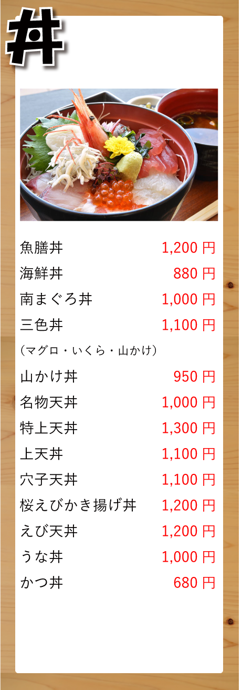
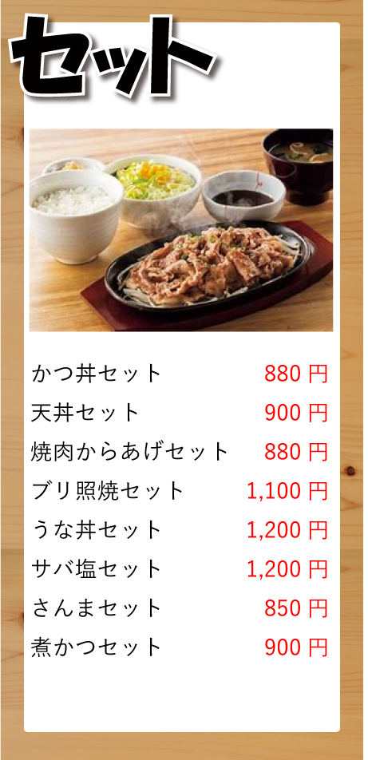
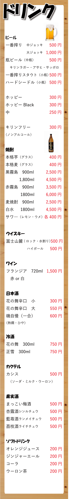
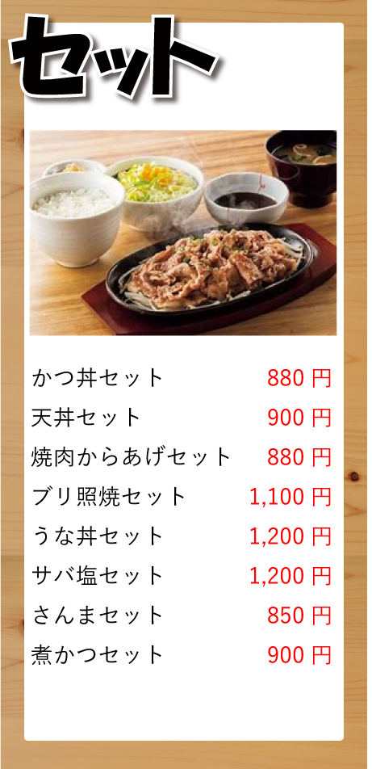
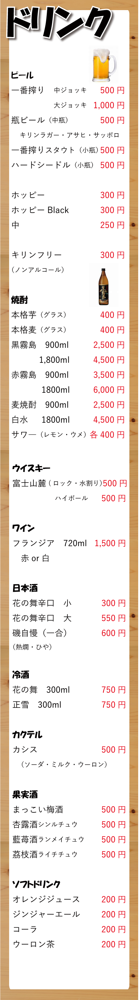
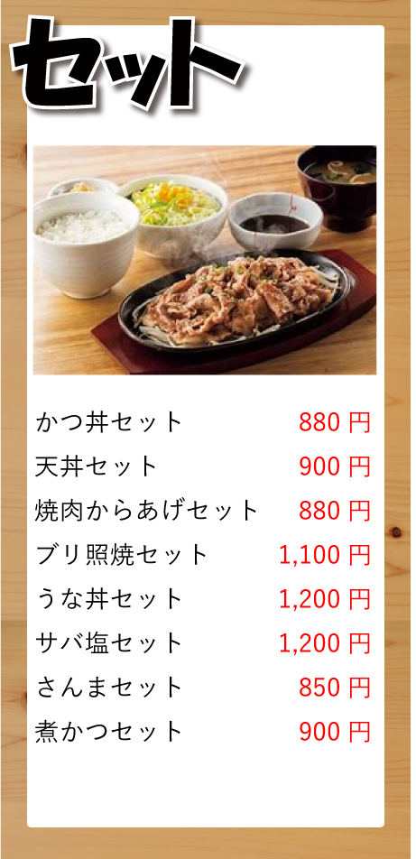
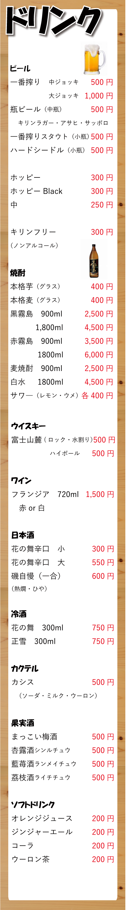

ABOUT
MENU

 




NEWS
初めての方へ
初めての方は11：00～11：30頃のご来店が比較的おすすめです。
お昼時は店内が大変混み合いますのでお待ちいただくかお断りする場合がございます。
土曜日のお昼時もおすすめです。
※絶品あじフライ定食は注文を受けてからあじをさばくためお時間に余裕のある方のみご注文ください。
夕方からの営業は居酒屋となりご予約のお客様が優先となっております。
お断りするかお待たせしてしまう場合がありますのでご了承ください。
ACCESS
| 住所 | 〒420-0852 静岡県静岡市葵区紺屋町8-9 みのやビル 1階 |
|---|---|
| 電話番号 | 054-205-1600 |
| 営業時間 | LUNCH 11：00〜14：00 DINNER 17：00〜22：00 |
| 定休日 | 日曜日 他不定休 |
| 交通アクセス | 静岡駅北口より徒歩3分 呉服町通り 葵タワー向かい |